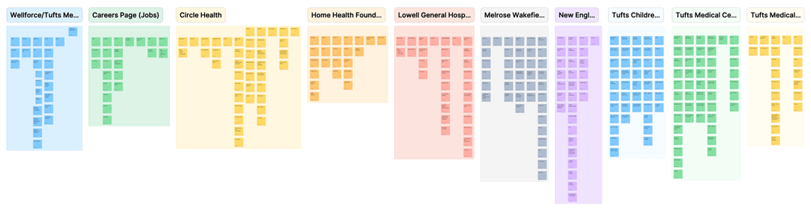
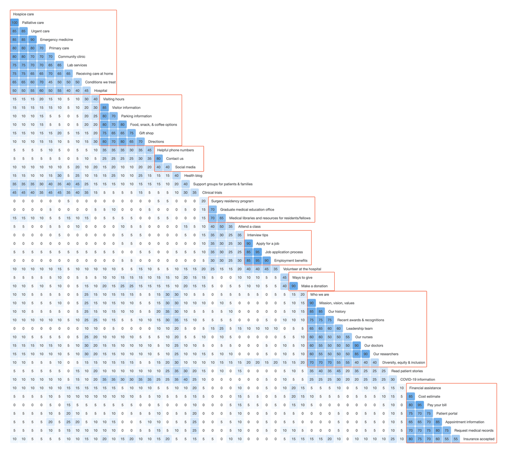
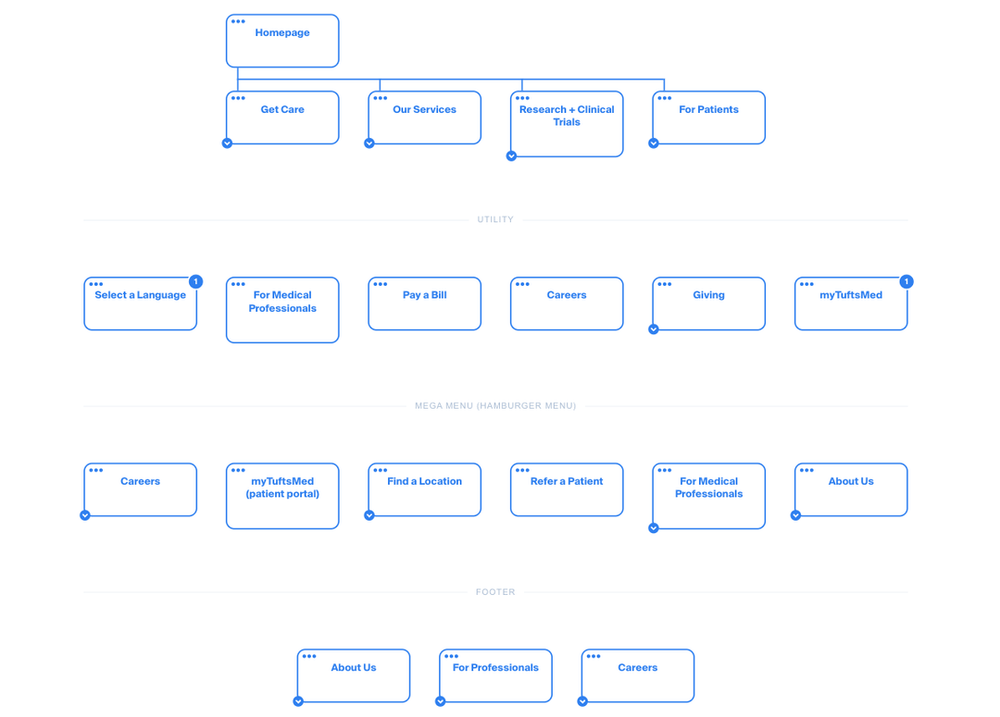
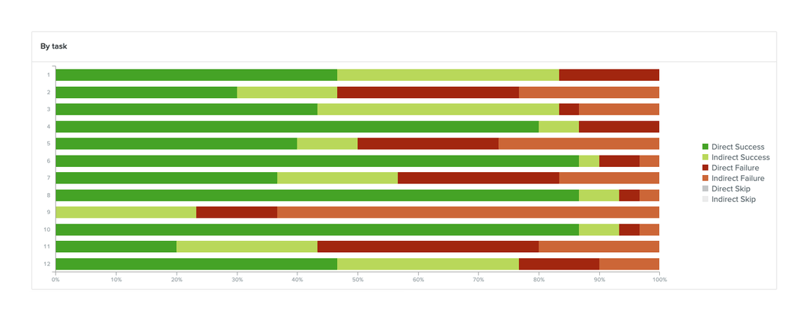

A redesigned information architecture to support a consolidation of the Tufts Medicine digital experience into a single site.
FUN FACT!
I previously worked at Tufts Medical Center as a registered nurse in Oncology and Bone Marrow Transplant, so this project was very special to me, and I was excited to help design a brand new site for Tufts Medicine.
Tufts Medicine is a large network of healthcare providers in Massachusetts working together to deliver exceptional care with a personal touch. The healthcare system is made up of five hospitals and hundreds of medical offices. With the new branding of Tufts Medicine, they asked us to design and develop a new website to reflect a unified mission and vision of "One Tufts Medicine".
I was challenged with creating a new information architecture to organize the content of multiple sites with different identities into a consolidated and consistent experience in a single site.
The team conducted an extensive discovery for the new Tufts Medicine site which included stakeholder interviews, user interviews, surveys, and workshops. My primary focus was assisting with user interviews, and synthesizing the findings into a detailed client report.
One of the main goals for the user interviews was to understand how participants became a Tufts Medicine patient and how they perceive Tufts Medicine as a whole. We learned about their experience by asking questions such as:
We also wanted to know how they found Tufts Medicine, especially if they've used the Tufts website and what they used it for, including any specific actions (e.g. find a doc, booking an appointment, paying a bill, etc). This was also important to understand what parts of the site they found to be most useful and what needed improvement.
Because a healthcare system as large as Tufts Medicine sees nearly every type of person, it's hard to separate them into useful personas without being too general. Instead, it's much more impactful to group people by the types of care they're seeking or receiving, even if it's across different patient populations. This allows us to holistically look at their goals and apply them to our work.

Prevention/Routine Care
These types of people are often healthy or are managing a chronic/temporary illness or injury. They tend to seek out information on how to become healthier and want an easy way to keep up with their annual appointments.
Diagnosis Discovery
People who were recently diagnosed with an illness tend to want more information about their condition and what they can do to treat it. They'll use Google, ask their doctor questions, get second opinions, and absorb information like a sponge.
Treatment Strategy
These patients would like a way to see their treatment plan laid out, know how often appointments need to be made and with whom, what medications they need to take/for how long, and anything else related to their plan.
Emergency Care
These people are often in a life or limb-threatening situation and need care immediately. If they're arriving through any method other than an ambulance, they must know where the closest emergency room is and how to get there.

Scheduled Procedures
Patients who are already booked for a procedure tend to want to be guided through the process. They want to know what they need to do leading up to the procedure, the day of, and what to expect afterwards.
Inpatient Stay
Both patients and family members are impacted by those staying for at least one night at a hospital or other medical facility. Patients can range from monitoring mild symptoms to requiring frequent attention.
My main contribution to this project was to rework the information architecture to combine the five sites into a single site with a focus on "One Tufts Medicine". My work consisted of auditing the current IA of the different sites, conducting a card sort, creating the new IA, and then conducting a tree test to gain initial feedback from users.




In collaboration with another UX Designer and a UI Designer, we created 80 high fidelity frames for both desktop and mobile. These wireframes were used by both our development team to build the final website as well as by the client to share with the broader Tufts Medicine network.
Due to my past experience working at Tufts Medical Center as a registered nurse, I was tasked with specifically testing the education and training sections of the site. I created a high fidelity prototype in Figma and conducted user tests over Zoom with 3 prospective medical residents and 2 prospective fellows.